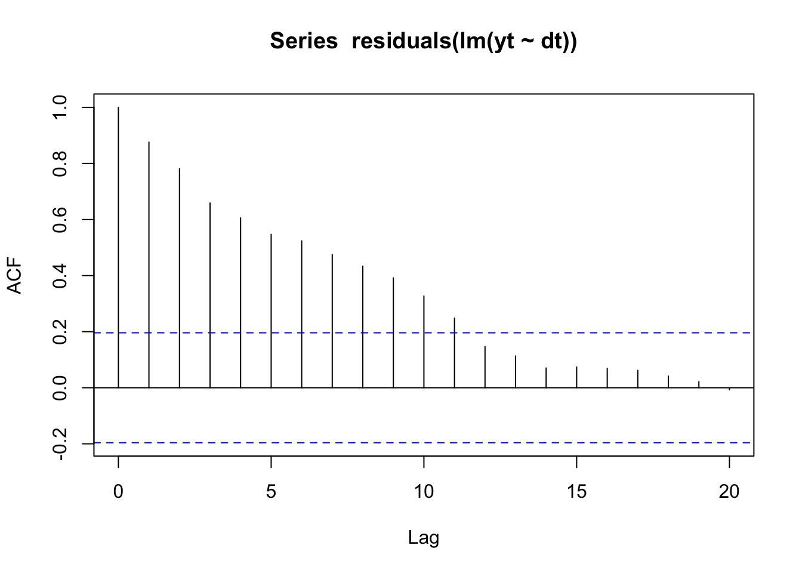

4.3 Linear regression with AR(1) errors
A simple linear regression of one covariate with AR(1) errors is written:
\[\begin{equation} \begin{gathered} x_{t} = bx_{t-1} + w_{t}, \text{ } w_t \sim \,\text{N}(0,q) \\ y_{t} = \beta*d_t + x_{t} \end{gathered} \tag{3.3} \end{equation}\]
Let’s create some simulated data with this structure:
beta <- 1.1
dt <- rnorm(TT, 0, 1) #our covariate
wt <- arima.sim(n = TT, model = list(ar = b), sd = sqrt(q))
yt <- beta * dt + wt
yt <- as.vector(yt) # not ts object
plot(dt, yt)If we looked at an ACF of the residuals of a linear regression, we’d see that the residuals are highly autocorrelated:

We can fit this model (Equation @ref(eq:short.lr.ar1)) with MARSS(). Please note that there are many better , packages specifically designed for linear regression models with correlated errors. This simple example is to help you understand model specification with the MARSS package.
To fit this model, we need match our Equation @ref(eq:short.lr.ar1) with the full MARSS model written in matrix form (Equation @ref(eq:marss.part2)). Here it is with the parameters that are zero dropped. \(\mathbf{Z}_t\) is identity and is also dropped. The \(\mathbf{B}\) and \(\mathbf{D}\) are time-constant so the \(t\) subscript is dropped. The \(\mathbf{x}_t\) are the AR(1) errors and the \(\mathbf{y}_t\) is the linear regression with \(\mathbf{D}\) being the effect sizes and the \(\mathbf{d}\) being the covariate.
\(1 \times 1\). \[\begin{equation} \begin{gathered} \begin{bmatrix}x\end{bmatrix}_{t} = \begin{bmatrix}b\end{bmatrix}\begin{bmatrix}x\end{bmatrix}_{t-1} + \begin{bmatrix}0\end{bmatrix} + \begin{bmatrix}w\end{bmatrix}_{t} \\ \begin{bmatrix}y\end{bmatrix}_{t} = \begin{bmatrix}x\end{bmatrix}_{t} + \begin{bmatrix}\beta\end{bmatrix}\begin{bmatrix}d\end{bmatrix}_t \end{gathered} \tag{3.5} \end{equation}\]
To create the model list for MARSS(), we specify the parameter matrices one-to-one like they look in Equation @ref(eq:short.lr.ar1.mat).
R <- matrix("r") # no v_t
D <- matrix("beta")
U <- matrix(0) # since arima.sim was used, no u
B <- matrix("b")
d <- matrix(dt, nrow = 1)
A <- matrix(0)MARSS() requires \(\mathbf{d}\) be a matrix also. Each row is a covariate and each column is a time step. No missing values allowed as this is an input.
How should we treat the \(\mathbf{R}\) matrix? It is zero, and we could set \(\mathbf{R}\) to zero:
R <- matrix(0)However, the EM algorithm in the MARSS package will not perform well at all with \(\mathbf{R}\) set to zero and it has to do with how \(\mathbf{R}=0\) affects the update equations. You can use the BFGS algorithm or estimate \(\mathbf{R}\).
R <- matrix("r")
mod.list <- list(B = B, U = U, R = R, D = D, d = d, A = A)
fit <- MARSS(yt, model = mod.list)Warning! Abstol convergence only. Maxit (=500) reached before log-log convergence.
MARSS fit is
Estimation method: kem
Convergence test: conv.test.slope.tol = 0.5, abstol = 0.001
WARNING: Abstol convergence only no log-log convergence.
maxit (=500) reached before log-log convergence.
The likelihood and params might not be at the ML values.
Try setting control$maxit higher.
Log-likelihood: -25.53381
AIC: 61.06762 AICc: 61.70592
Estimate
R.r 0.00264
B.b 0.91256
Q.Q 0.09294
x0.x0 -1.07486
D.beta 1.10169
Initial states (x0) defined at t=0
Standard errors have not been calculated.
Use MARSSparamCIs to compute CIs and bias estimates.
Convergence warnings
Warning: the R.r parameter value has not converged.
Type MARSSinfo("convergence") for more info on this warning.Or use the BFGS algorithm for fitting:
R <- matrix(0)
mod.list <- list(B = B, U = U, R = R, D = D, d = d, A = A)
fit <- MARSS(yt, model = mod.list, method = "BFGS")Success! Converged in 122 iterations.
Function MARSSkfas used for likelihood calculation.
MARSS fit is
Estimation method: BFGS
Estimation converged in 122 iterations.
Log-likelihood: -25.48386
AIC: 58.96772 AICc: 59.38878
Estimate
B.b 0.9090
Q.Q 0.0975
x0.x0 -1.0754
D.beta 1.1017
Initial states (x0) defined at t=0
Standard errors have not been calculated.
Use MARSSparamCIs to compute CIs and bias estimates.This is the same model you are fitting when you pass in xreg with the arima() function:
Call:
stats::arima(x = yt, order = c(1, 0, 0), xreg = dt, include.mean = FALSE, method = "ML")
Coefficients:
ar1 dt
0.9143 1.1023
s.e. 0.0384 0.0266
sigma^2 estimated as 0.09906: log likelihood = -27.19, aic = 60.39Again the estimates are slightly different due to different treatment of the initial conditons.